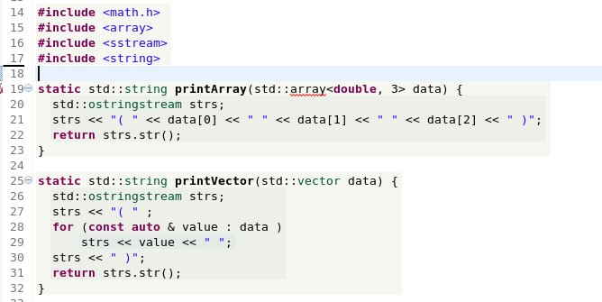
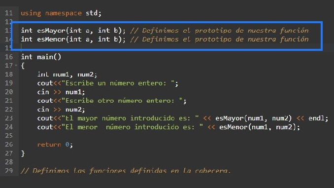
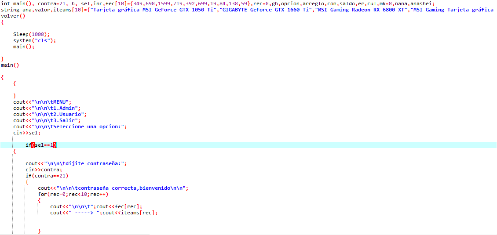
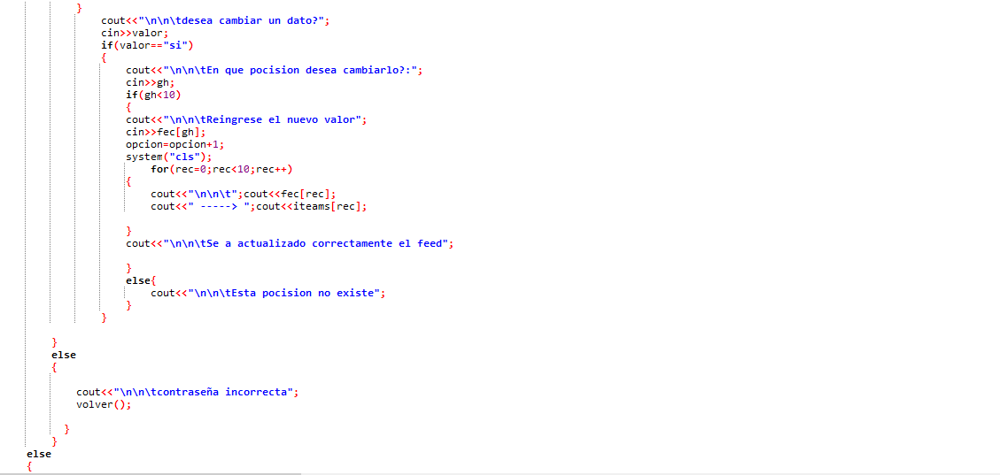
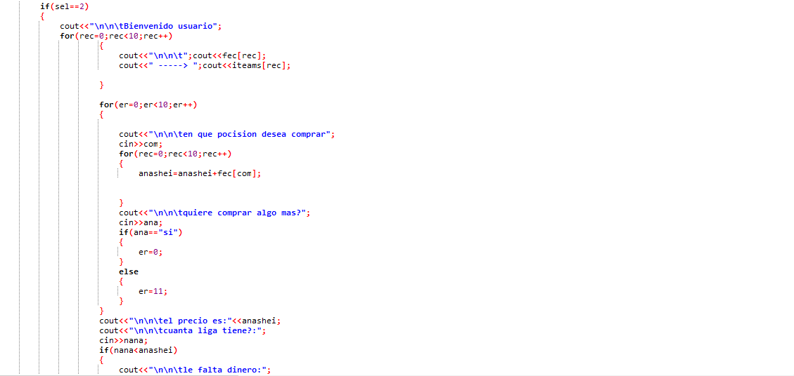
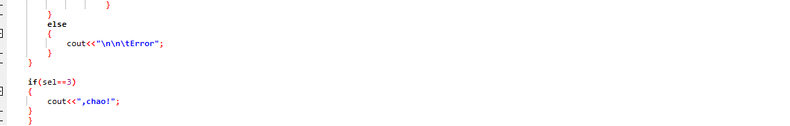
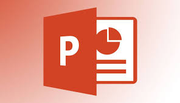

PARCIAL:Este parcial me parecio muy complicado hasta que empece a comprender mas lo que avia que hacer, desde el punto que ya tenia mas o menos la idea de como se hacia esto, tambien didactico ya que vi algunos videos y mis amigos tambien me explicaron como hacer estas cosas, el trabajo me gusto mucho, un tanto simple pero es un trabajo honesto
¿Qué es Word? Microsoft Word 2010 es un programa de procesamiento de texto diseñado para ayudarle a crear documentos de calidad profesional. Con las herramientas de formato de documento más fáciles, Word le ayuda a organizar y escribir documentos de forma más eficaz,desde mi punto de vista esta aplicacion me parece muy util y buena.
Es un programa diseñado para hacer presentaciones con texto esquematizado, así como presentaciones en diapositivas, animaciones de texto e imágenes prediseñadas o importadas desde imágenes de la computadora. Se le pueden aplicar distintos diseños de fuente, plantilla y dibujos.
Excel es un programa del tipo Hoja de Cálculo que permite realizar operaciones con números organizados en una cuadrícula. Es útil para realizar desde simples sumas hasta cálculos de préstamos hipotecarios.

VECTOR:Los vectores yo los controlaba muy bien y fluido pero en algunos momentos se me olvidaba y tenia que ver la repeticion de la clase para repasar el tema, aunque despues de la clase ya recuerdo mucho mejor el tema de los vector y pieso en un futuro mejorar en el avance de estos
VARIANTES:Antes yo controlaba las variantes muy mal y bastante simples(En el modo de volverse muy repetitivo)tambien las indicaba de solo una manera y era muy sencilla para el grado de dificualtad del trabajo, y ahora lo entiendo muvho mejor y simplificado
FUNCIONES:Yo manejaba el tema mas o menos bien de manera que simpre si tenia un error lo arreglaba con cualquier otra cosa que no sean relativamente funciones, depues del repaso que hicimos vi de otra manera las funciones que como lo hacia antes del repaso